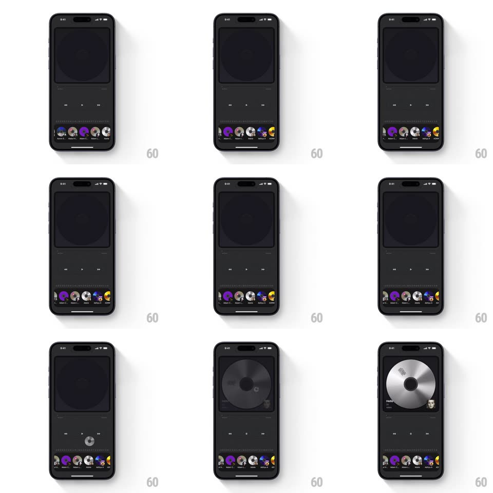

Media
Frame-by-frame

Rebuild this interaction 1:1: Droplay's CD loader - dragging (or tapping) a CD thumbnail from the curved bottom carousel sends it flying up into the dark player window, where it expands to full platter size and drops in with a spin, becoming the now-playing disc with its title and transport controls.

Rebuild this interaction 1:1: Droplay's CD loader - dragging (or tapping) a CD thumbnail from the curved bottom carousel sends it flying up into the dark player window, where it expands to full platter size and drops in with a spin, becoming the now-playing disc with its title and transport controls. ## Integration Integration: stack-agnostic spec - springs given as stiffness/damping, timed motions as duration + curve; map every value to your framework and animation library of choice. ## Scene Dark music player with an empty player window (a faint disc silhouette placeholder) above transport controls, and a curved bottom carousel of small CD thumbnails with artist labels. ## Motion spec Pattern: drag-to-load with fly-in platter. - Drag: the CD lifts from the carousel, scales to ~1.2x, and follows the finger with a slight tilt toward the drag direction; its carousel slot closes up as neighbors slide together (spring ~360/24). - Drop on the player window (or tap): the CD flies to the window center on a shallow arc (~450ms, ease-out), expanding to full size as it travels. - Landing: the platter drops the last ~20px with a soft bounce (spring ~420/30, ~250ms), begins spinning up to playback speed (linear ramp ~800ms), and the title/artist and transport controls fade in (250ms). - Tap alternative: same flight, triggered without the drag. ## Calibration - The flight is a single continuous motion from carousel to window - no teleport, no cut. - Placeholder silhouette is visible only while the window is empty. ## Reduced motion CD fades from carousel to window (250ms) at full size; no arc, no bounce, no spin-up. ## Don't miss - The CD's artwork rotates with the disc, not separately. - The carousel reflows immediately when a CD leaves - no empty slot left behind.